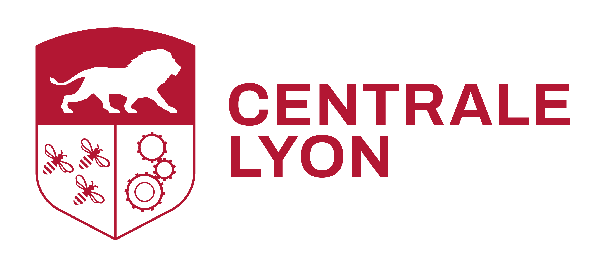
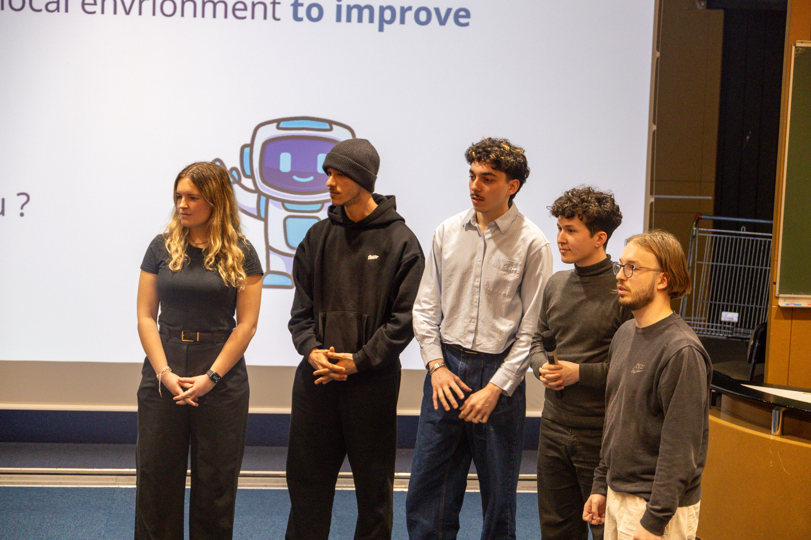
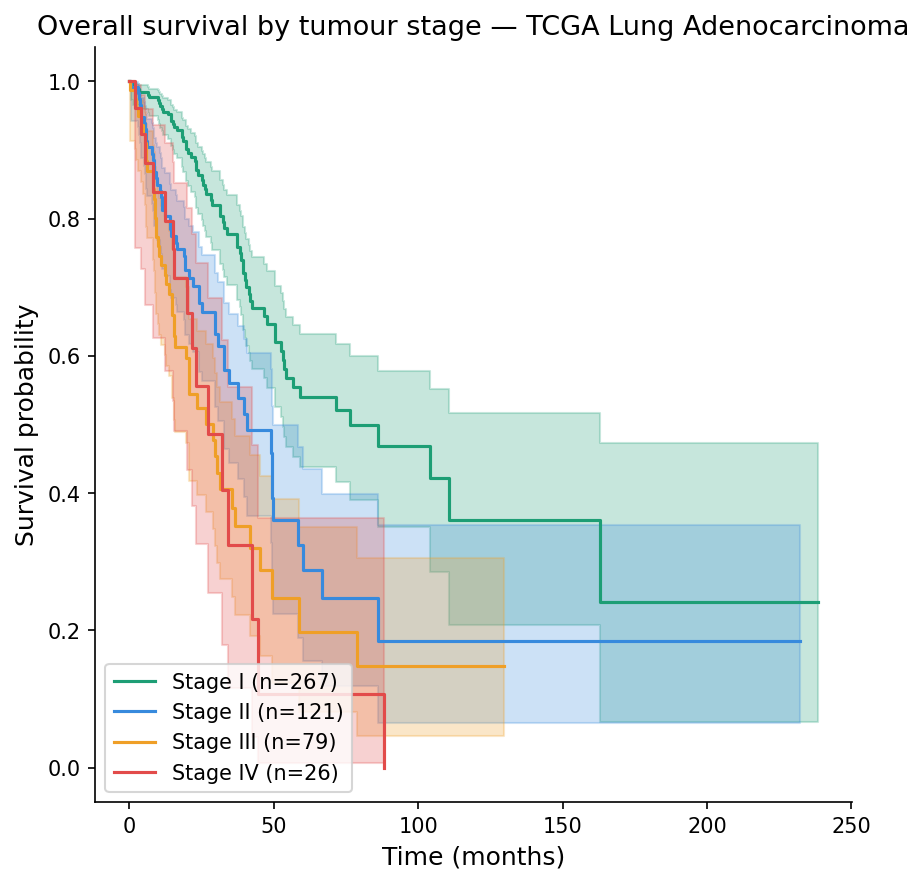

Sports lover and MSc student in Biomedical Engineering at Imperial College London, with a MEng in General Engineering from Centrale Lyon. I've had the opportunity to work across both academic research and a leading MedTech company, which allowed me to see the healthcare industry from different angles.
My goal is to help build a future where every patient has access to the right treatment, and where technology empowers individuals to rediscover their potential.
Imperial College London — London, UK
Data Analysis and Statistics · Computational Fluid Mechanics · Biofluids · Molecular, Cell and Tissue Engineering · Human Neuromechanical Learning · Medical Devices Certification · Physiology

Oct 2025 – Aug 2026
MScÉcole Centrale de Lyon — Lyon, France
Mathematics · Computer Science · Image Processing · Physics · Mechanical Engineering · Computational Fluid Dynamics · Economics

Sept 2022 – Aug 2026
MEngLycée Charlemagne — Paris, France
Preparation for national competitive entrance exams to leading French 'Grandes Écoles'.
Intensive program in advanced mathematics and physics.
Sept 2019 – July 2022
BScEMBL Australia × UNSW — Sydney, Australia
Built a computer vision pipeline from scratch for single-particle tracking and bacterial growth kinetics analysis.
Used advanced image processing techniques, such as Gaussian fitting, noise filtering, subpixel refinement, to overcome low SNR in fluorescence microscopy images, achieving nanometer-scale localization accuracy.
Upgraded diagnostic equipment for Parkinson's disease research by designing an integrated control system and UI.
Feb – Aug 2025
ResearchStryker — Grenoble, France
Acted as project manager for a research testing campaign on reverse shoulder prostheses.
Assessed how bone substitute materials affect implant performance, with results guiding future testing methods.
Led validations within a COFRAC-accredited laboratory ensuring strict compliance with FDA and EU MDR regulatory standards.

May – Dec 2024
IndustryTechnical
Languages
Hobbies
Judo — Black Belt
19 years of competitive practice, assistant coach for children.
Surfing
Discovered in Australia. 7 months across Sydney and Lombok.
Football
Striker in Centrale Lyon's women's team.
Guitar
8 years at conservatory level, second cycle with honours.
 MSc · 2026
MSc · 2026

Top 8 / 23
Personal · 2026